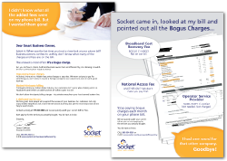
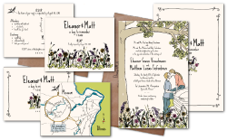

For Businesses:
Whether you're starting a business and need a solid logo and identity, are itching for a new website, or are just looking to drum up some business with a few eye-catching ads, I can help. My range of services is largely reflected in my portfolio, but I've mentioned a few of my most requested services below, and am always interested in something new and exciting, so don't hesitate to ask if your project seems unorthodox.
Brand, Identity, Logo:
If I have a "bread and butter," this is at least half of it. Whether you're a precious metals refinery or elderberry nursery, or something in between, getting to know you/your business and developing exactly the right "face" — one to express who you are, what you're all about, and that will appeal to your customers — is immensely important and is precisely what makes me tick. Branding projects come in all shapes and sizes. They can be as modest and simple as logo design, or can be quite vast — some beginning with logos and stationery (letterhead, envelopes, business cards, etc.), and growing to include a brand standard manual (specifying brand fonts, color palette, rules for logo-use, etc.), website, signage, ads, and more.
Print Design and Layout:
My famed "bread and butter's" other half. Print work made up the bulk of my formal training, so I have plenty of experience designing brochures, postcards, labels, posters, signs, magazines and ads, and am forever fascinated by the printing process. Plus, there's nothing quite like the feeling I get upon seeing a final printed project for the first time — sometimes, I literally get butterflies. Still.
Ads:
If I had a dime for every ad... well, I probably wouldn't be a millionaire, but I'd have a big, heavy jar of dimes, for sure! Getting attention through advertising can be tough, so your print and web ads must be carefully designed to stand out (though tastefully, not like the proverbial sore thumb) and deliver a clear message.
Illustration:
Often, my illustrations are a product of identity/logo projects. But I also do illustrations for many of my stationery projects and when I just can't find the image I'm looking for. If you can't find it either, I may just be your gal.
Websites:
In our increasingly technological world, websites are the key to being approachable and accessible, and are, thereby, a very valuable tool for businesses. Web design is my latest professional endeavor, and I'm enjoying every minute of it.
For Regular Folks
From thoughtful wedding stationery and greeting cards, to personal and professional identity projects (logo, resume, business cards, stationery), I love working with regular folks on personal projects, because they're intensely enthusiastic about them, and it's a delight to design for people who care. So if you're eager and fascinated with whatever it is you do and love (and/or are madly in love and getting hitched), let's talk!
For the Wild and Crazy
Not all projects fit in the categories above. I know, 'cause I've designed vehicle wraps, trade show booth backdrops, and I recently designed a marquee for a theater restoration project.
So if you need a billboard, or a gin bottle, or seed packets — anything I haven't mentioned or shown in my portfolio — let’s discuss it, anyway. There's a good chance I can help. Plus, I get major kicks out of exploring something new.

© ellie t. studio
Let's be social